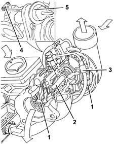
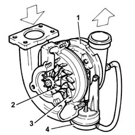
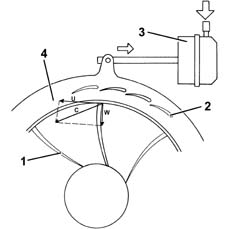
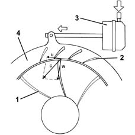
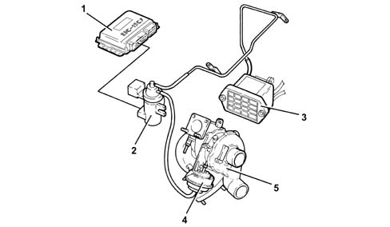
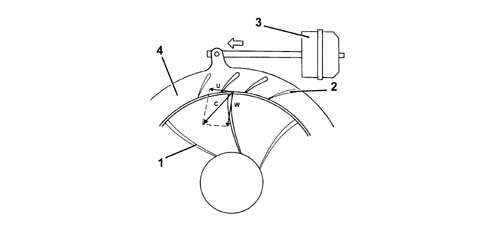
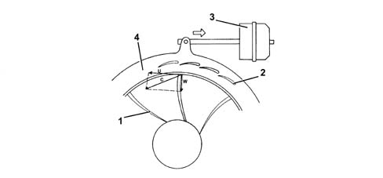
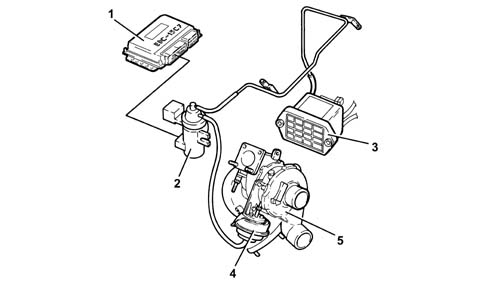

1064A turbo charger assembly
- Path
- Descriptions > 10 ENGINE > 1064 ENGINE TURBOCHARGING SYSTEM > 1064A turbo charger assembly
- Kind
- system description
- Applies to
- engines: 1.9 JTD 8v , 1.9 JTD 16v, 2.4 JTD 10v; all production periods
- Interactive page
- https://sloeber94.github.io/elrnDB-a156/en/#/3232881
Applies to: engines: 1.9 JTD 8v ; all production periods
GARRET GT 15 Turbocharger
It basically consists of two impellers (1) fitted on the same shaft (2), which rotates on two floating bearings which are lubricated by means of a branch (3) in the engine lubrication system.
The oil used disperses some of the large amount of heat which is given off by the exhaust gases at the turbine.
There is a wastegate valve (4) fitted on the turbocharger, controlled by a pneumatic actuator (5), which allows the passage of exhaust gases to the turbine to be choked depending on the engine's power/torque requirements.
To check the calibration of the wastegate actuator, see test 1064A turbo charger assembly .

Applies to: engines: 2.4 JTD 10v; all production periods
GARRET VNT 25 TURBOCHARGER
It has variable geometry and is connected to the exhaust manifold; its purpose is to increase the volumetric output of the engine.
This variable geometry turbocharger consists of:
- a centrifugal compressor (1)
- a turbine (2)
- a series of moving vanes (3)
- a pneumatic actuator (4) for operating the moving vanes.

This variable geometry turbocharger makes it possible to:
- increase the speed of the exhaust gases in the turbine at low engine speeds
- slow down the speed of the exhaust gases in the turbine at high speeds.
Controlling the speed (kinetic energy) of the exhaust gases makes it possible to produce:
- greater engine torque at low speeds
- greater maximum power at high speeds.
See test 1064A turbo charger assembly for functional testing of rotary ring.
Operation at low rotation speeds
When the engine rotation speed is low, the exhaust gases possess little kinetic energy: under these circumstances, a conventional turbine would rotate slowly, supplying a limited supercharging pressure.
In a variable geometry turbine (1), on the other hand, the moving vanes (2) are in the maximum closure position and the small sections between the vanes increase the speed (C) of the intake gases.
Increased intake speeds result in greater peripheral speeds (U) for the turbine and consequently the compressor.
The speed of the gases inside the impeller is shown by the vector (W).

1, Turbine 2, Moving vanes 3, Pneumatic actuator 4, Rotary ring
Operation at high rotation speeds
If the engine rotation speed increases, the kinetic energy of the exhaust gases also gradually increases.
As a result the speed of the turbine (1) increases and consequently the supercharging pressure which also acts on the actuator (3).
The actuator (3) opens the moving vanes (2), by means of a rod, according to the supercharging pressure, until the maximum opening position is reached.
There is therefore an increase in the sections and consequently a slowing down in the flow of the exhaust gases passing through the turbine (1) at speeds which are the same as or lower than those for the low speed conditions.
The speed of the turbine (1) decreases and settles down at a suitable rate for the correct operation of the engine at high speeds.

1, Turbine 2, Moving vanes 3, Pneumatic actuator 4, Rotary ring
Applies to: engines: 1.9 JTD 8v , 2.4 JTD 10v; all production periods; only with equipment: Euro 3
GARRET GT2256V TURBOCHARGER
It has variable geometry and is connected to the exhaust manifold; its purpose is to increase the volumetric output of the engine.
This variable geometry turbocharger consists of:
- a centrifugal compressor
- a turbine
- a series of moving vanes
- a pneumatic actuator for operating the moving vanes.
The operation of the turbocharger's variable geometry is managed by the control unit via the control of the VGT solenoid.

1 - Engine management control unit 2 - VGT solenoid 3 - Vacuum reservoir 4 - Moving vane actuator 5 - Turbocharger
This variable geometry turbocharger makes it possible to:
- increase the speed of the exhaust gases in the turbine at low engine speeds
- slow down the speed of the exhaust gases in the turbine at high speeds.
Controlling the speed (kinetic energy) of the exhaust gases makes it possible to produce:
- greater engine torque at low speeds
- greater maximum power at high speeds.
Operation and high rotation speeds
If the engine rotation speed increases, the kinetic energy of the exhaust gases also gradually increases.
As a result the speed of the turbine (1) increases and consequently the supercharging pressure which also acts on the actuator (3).
The actuator (3), controlled by the solenoid, operates the opening of the moving vanes (2) via a rod, until the fully open position is reached.
There is therefore an increase in the sections and consequently a slowing down in the flow of the exhaust gases passing through the turbine (1) at speeds which are the same as or lower than those for the low speed conditions.
The speed of the turbine (1) decreases and settles down at a suitable rate for the correct operation of the engine at high speeds.

1 - Turbine 2 - Moving vanes 3 - Pneumatic actuator 4 - Rotary ring
Operation at low rotation speeds
When the engine rotation speed is low, the exhaust gases possess little kinetic energy: under these circumstances, a conventional turbine would rotate slowly, supplying a limited supercharging pressure.
In a variable geometry turbine (1), on the other hand, the moving vanes (2) are in the maximum closure position and the small sections between the vanes increase the speed (C) of the intake gases.
Increased intake speeds result in greater peripheral speeds (U) for the turbine and consequently the compressor.
The speed of the gases inside the impeller is shown by the vector (W).

1 - Turbine 2 - Moving vanes 3 - Pneumatic actuator 4 - Rotary ring
Applies to: engines: 1.9 JTD 16v; all production periods
COMPONENT DESCRIPTION
GARRET GT1749V TURBOCHARGER
It has variable geometry and is connected to the exhaust manifold; its purpose is to increase the volumetric output of the engine.
This variable geometry turbocharger consists of:
- a centrifugal compressor
- a turbine
- a series of moving vanes
- a pneumatic actuator for operating the moving vanes.
The operation of the turbocharger's variable geometry is managed by the control unit via the control of the VGT solenoid.

1 - Engine management control unit 2 - VGT solenoid 3 - Vacuum reservoir 4 - Moving vane actuator 5 - Turbocharger
This variable geometry turbocharger makes it possible to:
- increase the speed of the exhaust gases in the turbine at low engine speeds
- slow down the speed of the exhaust gases in the turbine at high speeds.
Controlling the speed (kinetic energy) of the exhaust gases makes it possible to produce:
- greater engine torque at low speeds
- greater maximum power at high speeds.
Operation and high rotation speeds
If the engine rotation speed increases, the kinetic energy of the exhaust gases also gradually increases.
As a result, the speed of the turbine (1) and, consequently, the supercharging pressure increases.
The actuator (3), controlled by the solenoid, operates the opening of the moving vanes (2) via a rod, until the fully open position is reached.
There is therefore an increase in the sections and consequently a slowing down in the flow of the exhaust gases passing through the turbine (1) at speeds which are the same as or lower than those for the low speed conditions.
The speed of the turbine (1) decreases and settles down at a suitable rate for the correct operation of the engine at high speeds.
1 - Turbine 2 - Moving vanes 3 - Pneumatic actuator 4 - Rotary ring
Operation at low rotation speeds
When the engine rotation speed is low, the exhaust gases possess little kinetic energy: under these circumstances, a conventional turbine would rotate slowly, supplying a limited supercharging pressure.
In a variable geometry turbine (1), on the other hand, the moving vanes (2) are in the maximum closure position and the small sections between the vanes increase the speed (C) of the intake gases.
Increased intake speeds result in greater peripheral speeds (U) for the turbine and consequently the compressor.
The speed of the gases inside the impeller is shown by the vector (W).
1 - Turbine 2 - Moving vanes 3 - Pneumatic actuator 4 - Rotary ring